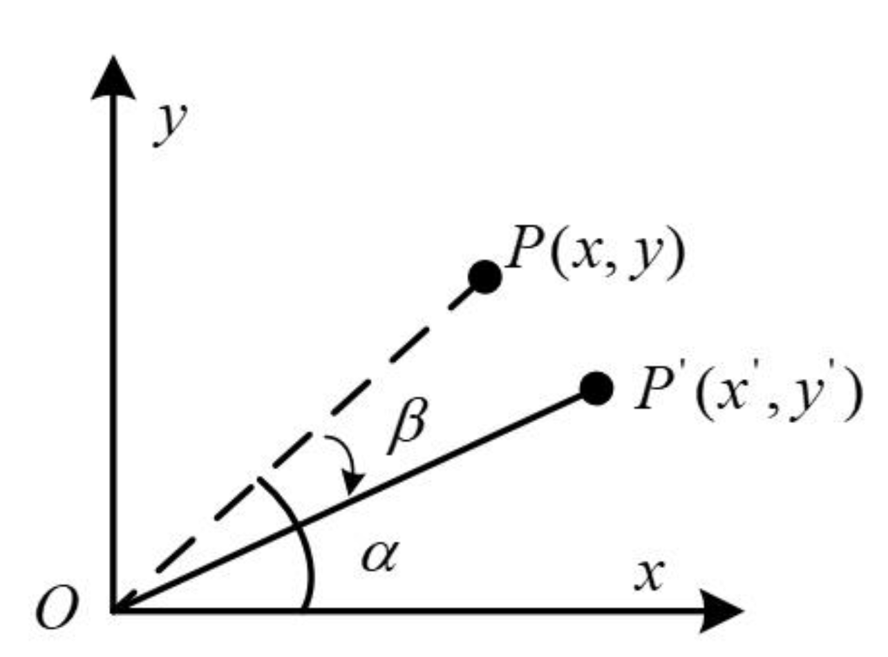

三维旋转表示¶
旋转矩阵¶
旋转矩阵包含两种意思：一是在固定坐标系下，向量的旋转；二是坐标系旋转，使得同一向量在不同坐标系下表示不同。
接下来首先讨论二维平面旋转表示，然后引申至三维。
向量旋转（外旋）¶
-
二维平面旋转
 \[ \begin{equation*} \left\{ \begin{aligned} x'={|OP|}\cdot{\cos(\alpha+\beta)}={|OP|}\cdot{(\cos\alpha\cos\beta-\sin\alpha\sin\beta)}={x}\cdot{\cos\beta}-{y}\cdot{\sin\beta} \\ y'={|OP|}\cdot{\sin(\alpha+\beta)}={|OP|}\cdot{(\sin\alpha\cos\beta+\cos\alpha\sin\beta)}={x}\cdot{\sin\beta}+{y}\cdot{\cos\beta} \end{aligned} \right. \end{equation*} \]
\[ \begin{equation*} \left\{ \begin{aligned} x'={|OP|}\cdot{\cos(\alpha+\beta)}={|OP|}\cdot{(\cos\alpha\cos\beta-\sin\alpha\sin\beta)}={x}\cdot{\cos\beta}-{y}\cdot{\sin\beta} \\ y'={|OP|}\cdot{\sin(\alpha+\beta)}={|OP|}\cdot{(\sin\alpha\cos\beta+\cos\alpha\sin\beta)}={x}\cdot{\sin\beta}+{y}\cdot{\cos\beta} \end{aligned} \right. \end{equation*} \]转换成矩阵形式：
\[ \begin{bmatrix} x'\\ y' \end{bmatrix}= {\begin{bmatrix} \cos\beta&-\sin\beta\\ \sin\beta&\cos\beta \end{bmatrix}}\cdot {\begin{bmatrix} x\\ y \end{bmatrix}} \]中间的矩阵为二维旋转矩阵，向量左乘该矩阵即为该向量逆时针旋转\(\beta\)角之后得到的向量。
反向（顺时针）旋转： 
\[ \begin{bmatrix} x'\\ y' \end{bmatrix}= {\begin{bmatrix} \cos\beta&\sin\beta\\ -\sin\beta&\cos\beta \end{bmatrix}}\cdot {\begin{bmatrix} x\\ y \end{bmatrix}} \]注意到，该矩阵为正向旋转矩阵的逆矩阵，且为转置矩阵（因为旋转矩阵为正交矩阵）。
-
三维旋转
为简化分析与计算，下面只考虑绕X、Y、Z轴的旋转。
-
绕X轴
 \[ \begin{equation*} \left\{ \begin{aligned} &x' = x \\ &y'={|OP|}\cdot{\cos(\alpha+\beta)}={|OP|}\cdot{(\cos\alpha\cos\beta-\sin\alpha\sin\beta)}={y}\cdot{\cos\beta}-{z}\cdot{\sin\beta} \\ &z'={|OP|}\cdot{\sin(\alpha+\beta)}={|OP|}\cdot{(\sin\alpha\cos\beta+\cos\alpha\sin\beta)}={y}\cdot{\sin\beta}+{z}\cdot{\cos\beta} \end{aligned} \right. \end{equation*} \]\[ \begin{bmatrix} x'\\ y'\\ z' \end{bmatrix}= {\begin{bmatrix} 1&0&0\\ 0&\cos\beta&-\sin\beta\\ 0&\sin\beta&\cos\beta \end{bmatrix}}\cdot {\begin{bmatrix} x\\ y\\ z \end{bmatrix}} \]
\[ \begin{equation*} \left\{ \begin{aligned} &x' = x \\ &y'={|OP|}\cdot{\cos(\alpha+\beta)}={|OP|}\cdot{(\cos\alpha\cos\beta-\sin\alpha\sin\beta)}={y}\cdot{\cos\beta}-{z}\cdot{\sin\beta} \\ &z'={|OP|}\cdot{\sin(\alpha+\beta)}={|OP|}\cdot{(\sin\alpha\cos\beta+\cos\alpha\sin\beta)}={y}\cdot{\sin\beta}+{z}\cdot{\cos\beta} \end{aligned} \right. \end{equation*} \]\[ \begin{bmatrix} x'\\ y'\\ z' \end{bmatrix}= {\begin{bmatrix} 1&0&0\\ 0&\cos\beta&-\sin\beta\\ 0&\sin\beta&\cos\beta \end{bmatrix}}\cdot {\begin{bmatrix} x\\ y\\ z \end{bmatrix}} \] -
绕Y轴
 \[ \begin{equation*} \left\{ \begin{aligned} &x'={|OP|}\cdot{\sin(\alpha+\beta)}={|OP|}\cdot{(\sin\alpha\cos\beta+\cos\alpha\sin\beta)}={x}\cdot{\cos\beta}+{z}\cdot{\sin\beta} \\ &y'=y \\ &z'={|OP|}\cdot{\cos(\alpha+\beta)}={|OP|}\cdot{(\cos\alpha\cos\beta-\sin\alpha\sin\beta)}={x}\cdot{(-\sin\beta)}+{z}\cdot{\cos\beta} \end{aligned} \right. \end{equation*} \]\[ \begin{bmatrix} x'\\ y'\\ z' \end{bmatrix}= {\begin{bmatrix} \cos\beta&0&\sin\beta\\ 0&1&0\\ -\sin\beta&0&\cos\beta \end{bmatrix}}\cdot {\begin{bmatrix} x\\ y\\ z \end{bmatrix}} \]
\[ \begin{equation*} \left\{ \begin{aligned} &x'={|OP|}\cdot{\sin(\alpha+\beta)}={|OP|}\cdot{(\sin\alpha\cos\beta+\cos\alpha\sin\beta)}={x}\cdot{\cos\beta}+{z}\cdot{\sin\beta} \\ &y'=y \\ &z'={|OP|}\cdot{\cos(\alpha+\beta)}={|OP|}\cdot{(\cos\alpha\cos\beta-\sin\alpha\sin\beta)}={x}\cdot{(-\sin\beta)}+{z}\cdot{\cos\beta} \end{aligned} \right. \end{equation*} \]\[ \begin{bmatrix} x'\\ y'\\ z' \end{bmatrix}= {\begin{bmatrix} \cos\beta&0&\sin\beta\\ 0&1&0\\ -\sin\beta&0&\cos\beta \end{bmatrix}}\cdot {\begin{bmatrix} x\\ y\\ z \end{bmatrix}} \] -
绕Z轴
 \[ \begin{equation*} \left\{ \begin{aligned} &x'={|OP|}\cdot{\cos(\alpha+\beta)}={|OP|}\cdot{(\cos\alpha\cos\beta-\sin\alpha\sin\beta)}={x}\cdot{\cos\beta}-{y}\cdot{\sin\beta} \\ &y'={|OP|}\cdot{\sin(\alpha+\beta)}={|OP|}\cdot{(\sin\alpha\cos\beta+\cos\alpha\sin\beta)}={x}\cdot{\sin\beta}+{y}\cdot{\cos\beta} \\ &z'=z \end{aligned} \right. \end{equation*} \]\[ \begin{bmatrix} x'\\ y'\\ z' \end{bmatrix}= {\begin{bmatrix} \cos\beta&-\sin\beta&0\\ \sin\beta&\cos\beta&0\\ 0&0&1 \end{bmatrix}}\cdot {\begin{bmatrix} x\\ y\\ z \end{bmatrix}} \]
\[ \begin{equation*} \left\{ \begin{aligned} &x'={|OP|}\cdot{\cos(\alpha+\beta)}={|OP|}\cdot{(\cos\alpha\cos\beta-\sin\alpha\sin\beta)}={x}\cdot{\cos\beta}-{y}\cdot{\sin\beta} \\ &y'={|OP|}\cdot{\sin(\alpha+\beta)}={|OP|}\cdot{(\sin\alpha\cos\beta+\cos\alpha\sin\beta)}={x}\cdot{\sin\beta}+{y}\cdot{\cos\beta} \\ &z'=z \end{aligned} \right. \end{equation*} \]\[ \begin{bmatrix} x'\\ y'\\ z' \end{bmatrix}= {\begin{bmatrix} \cos\beta&-\sin\beta&0\\ \sin\beta&\cos\beta&0\\ 0&0&1 \end{bmatrix}}\cdot {\begin{bmatrix} x\\ y\\ z \end{bmatrix}} \] -
三维旋转矩阵
以上旋转矩阵都是在右手坐标系下计算的，三维旋转矩阵就由以上三个矩阵依次左乘得到，且逆时针为正，三维旋转矩阵表示为：
\[ M= {R_x(\alpha)}\cdot{R_y(\beta)}\cdot{R_z(\gamma)}= {\begin{bmatrix} 1&0&0\\ 0&\cos\alpha&-\sin\alpha\\ 0&\sin\alpha&\cos\alpha \end{bmatrix}}\cdot {\begin{bmatrix} \cos\beta&0&\sin\beta\\ 0&1&0\\ -\sin\beta&0&\cos\beta \end{bmatrix}}\cdot {\begin{bmatrix} \cos\gamma&-\sin\gamma&0\\ \sin\gamma&\cos\gamma&0\\ 0&0&1 \end{bmatrix}}= {\begin{bmatrix} \cos\beta\cos\gamma&-\cos\beta\sin\gamma&\sin\beta\\ \cos\alpha\sin\gamma+\cos\gamma\sin\alpha\sin\beta&\cos\alpha\cos\gamma-\sin\alpha\sin\beta\sin\gamma&-\cos\beta\sin\alpha\\ \sin\alpha\sin\gamma-\cos\alpha\cos\gamma\sin\beta&\cos\gamma\sin\alpha+\cos\alpha\sin\beta\sin\gamma&\cos\alpha\cos\beta \end{bmatrix}} \]上述表示向量先绕Z轴旋转\(\gamma\)角，再绕Y轴旋转\(\beta\)角，最后绕X轴旋转\(\alpha\)角的旋转矩阵。
-
{kind=link}
坐标系旋转（内旋）¶
-
二维平面旋转

矩阵表示为：
\[ \begin{bmatrix} x \\ y \end{bmatrix}= {\begin{bmatrix} \cos\beta&-\sin\beta\\ \sin\beta&\cos\beta \end{bmatrix}}\cdot {\begin{bmatrix} x' \\ y' \end{bmatrix}} \] -
三维旋转
-
绕X轴
 \[ \begin{bmatrix} x \\ y \\ z \end{bmatrix}= {\begin{bmatrix} 1&0&0\\ 0&\cos\beta&-\sin\beta\\ 0&\sin\beta&\cos\beta \end{bmatrix}}\cdot {\begin{bmatrix} x' \\ y' \\ z' \end{bmatrix}} \]
\[ \begin{bmatrix} x \\ y \\ z \end{bmatrix}= {\begin{bmatrix} 1&0&0\\ 0&\cos\beta&-\sin\beta\\ 0&\sin\beta&\cos\beta \end{bmatrix}}\cdot {\begin{bmatrix} x' \\ y' \\ z' \end{bmatrix}} \] -
绕Y轴
 \[ \begin{bmatrix} x \\ y \\ z \end{bmatrix}= {\begin{bmatrix} \cos\beta&0&\sin\beta\\ 0&1&0\\ -\sin\beta&0&\cos\beta \end{bmatrix}}\cdot {\begin{bmatrix} x' \\ y' \\ z' \end{bmatrix}} \]
\[ \begin{bmatrix} x \\ y \\ z \end{bmatrix}= {\begin{bmatrix} \cos\beta&0&\sin\beta\\ 0&1&0\\ -\sin\beta&0&\cos\beta \end{bmatrix}}\cdot {\begin{bmatrix} x' \\ y' \\ z' \end{bmatrix}} \] -
绕Z轴
 \[ \begin{bmatrix} x \\ y \\ z \end{bmatrix}= {\begin{bmatrix} \cos\beta&-\sin\beta&0\\ \sin\beta&\cos\beta&0\\ 0&0&1 \end{bmatrix}}\cdot {\begin{bmatrix} x' \\ y' \\ z' \end{bmatrix}}\cdot \]
\[ \begin{bmatrix} x \\ y \\ z \end{bmatrix}= {\begin{bmatrix} \cos\beta&-\sin\beta&0\\ \sin\beta&\cos\beta&0\\ 0&0&1 \end{bmatrix}}\cdot {\begin{bmatrix} x' \\ y' \\ z' \end{bmatrix}}\cdot \] -
三维旋转矩阵
以上旋转矩阵都是在右手坐标系下计算的，三维旋转矩阵就由以上三个矩阵依次右乘得到，且逆时针为正，三维旋转矩阵表示为：
\[ M= {R_x(\alpha)}\cdot{R_y(\beta)}\cdot{R_z(\gamma)}= {\begin{bmatrix} 1&0&0\\ 0&\cos\alpha&-\sin\alpha\\ 0&\sin\alpha&\cos\alpha \end{bmatrix}}\cdot {\begin{bmatrix} \cos\beta&0&\sin\beta\\ 0&1&0\\ -\sin\beta&0&\cos\beta \end{bmatrix}}\cdot {\begin{bmatrix} \cos\gamma&-\sin\gamma&0\\ \sin\gamma&\cos\gamma&0\\ 0&0&1 \end{bmatrix}}= {\begin{bmatrix} \cos\beta\cos\gamma&-\cos\beta\sin\gamma&\sin\beta\\ \cos\alpha\sin\gamma+\cos\gamma\sin\alpha\sin\beta&\cos\alpha\cos\gamma-\sin\alpha\sin\beta\sin\gamma&-\cos\beta\sin\alpha\\ \sin\alpha\sin\gamma-\cos\alpha\cos\gamma\sin\beta&\cos\gamma\sin\alpha+\cos\alpha\sin\beta\sin\gamma&\cos\alpha\cos\beta \end{bmatrix}} \]上述表示坐标系先绕X轴旋转\(\alpha\)角，再绕Y轴旋转\(\beta\)角，最后绕Z轴旋转\(\gamma\)角的旋转矩阵。
-
总结¶
- 外旋：绕固定坐标系旋转，左乘，坐标（向量）在变换。
- 内旋：绕自身坐标系旋转，右乘，坐标系（基底）在变换。
- Z-Y-X顺序的外旋等价于X-Y-Z顺序的内旋。
欧拉角¶
欧拉角（Euler Angles）一般指绕物体自身坐标系的旋转，而绕固定坐标系的旋转，我们一般称之为固定角（Fixed Angles）
直观表示¶
以X、Y、Z轴旋转的角度表示三维空间的旋转，也就是Row、Pitch、Yaw的角度：

表达方式¶
欧拉角一般具有两大类表达方式，每类按照旋转次序的不同分为6小类:
Proper Euler angles (z-x-z, x-y-x, y-z-y, z-y-z, x-z-x, y-x-y)
Tait–Bryan angles (x-y-z, y-z-x, z-x-y, x-z-y, z-y-x, y-x-z)
每个大类都使用了3个变量描述三次旋转过程中的旋转角度，差别在于Proper Euler angles只涉及两个转轴，而Tait–Bryan angles涉及三个转轴。
如果只给出一组欧拉角，绕x，y，z轴的转角为\((\alpha, \beta, \gamma)\)，我们并不能确定其姿态，还需要知道旋转顺序，才能确定这组欧拉角对应的姿态。
万向节死锁¶
万向锁（Gimbal Lock），当 \(Pitch = ±90°\) 时，绕第三个轴旋转的欧拉角和绕第一个轴旋转的欧拉角效果相同，即系统失去了一个自由度，出现了奇异性。
这里给出万向锁的直观表示：无伤理解欧拉角中的“万向死锁”现象
在使用欧拉角表示时，保证\(Pitch\neq±90°\)，避免出现万向锁的问题。
四元数¶
四元数的直观表示比较复杂，难以理解，但四元数在三维旋转表示中有着独特的优势。相较于欧拉角，可避免万向锁的问题；相较于旋转矩阵，又可清晰地表示出旋转轴及旋转角度，这里给出四元数可视化。
定义¶
四元数是由实数加上三个元素 \(i, j, k\) 组成，而且它们有如下的关系：
四元数一般表示为 \(a+bi+cj+dk\)
四元数也可表示为向量形式：
此外，我们在表示四元数时，还经常把实部与虚部分开，用一个实数 \(s\) 表示实部，用一个三维向量 \(\vec{v}\) 来表示虚部：
基本性质¶
四元数乘法满足反交换律：
四元数模长（范数）：
或者
四元数共轭：
四元数的逆：
纯四元数（仅有虚部）：
单位四元数（模长为1）：
单位四元数表示三维空间旋转¶
若三维空间里的一个点的笛卡尔坐标为 \((x,y,z)\)，则它用纯四元数 \(xi+yj+zk\) 表示。
设 \(q\) 为一个单位四元数，而 \(p\) 是一个纯四元数，定义：
则 \(R_q(p)\) 也是一个纯四元数，可以证明 \(R_q\) 确实表示一个旋转，这个旋转将空间的点 \(p\) 旋转为空间的另一个点 \(R_q(p)\)。
其中：
\(\vec{v}={\begin{bmatrix}x\\y\\z\end{bmatrix}}\) 为三维旋转轴向量，\(\theta\) 为旋转角度（这实际上就是三维旋转的又一种表示方法：轴角表示）。
三者关系¶
旋转矩阵与欧拉角¶
-
欧拉角转旋转矩阵
已知一组欧拉角，绕自身坐标系Z-Y-X旋转\((\gamma, \beta, \alpha)\)，则旋转矩阵为：
\[ M= {R_z(\gamma)}\cdot{R_y(\beta)}\cdot{R_x(\alpha)}= {\begin{bmatrix} \cos(\beta)\cos(\gamma)&\cos(\gamma)\sin(\alpha)\sin(\beta) - \cos(\alpha)\sin(\gamma)&\sin(\alpha)\sin(\gamma) + \cos(\alpha)\cos(\gamma)\sin(\beta)\\ \cos(\beta)\sin(\gamma)&\cos(\alpha)\cos(\gamma) + \sin(\alpha)\sin(\beta)\sin(\gamma)&\cos(\alpha)\sin(\beta)\sin(\gamma) - \cos(\gamma)\sin(\alpha)\\ -\sin(\beta)&\cos(\beta)\sin(\alpha)&\cos(\alpha)\cos(\beta) \end{bmatrix} } \] -
旋转矩阵转欧拉角
已知旋转矩阵：
\[ R= {\begin{bmatrix} r_{11}&r_{12}&r_{13}\\ r_{21}&r_{22}&r_{23}\\ r_{31}&r_{32}&r_{33} \end{bmatrix} } \]求出各轴旋转角为：
\[ \begin{equation*} \left\{ \begin{aligned} &\gamma=atan2(r_{21}, r_{11}) \\ &\beta=atan2(-r_{31}, \sqrt{r_{32}^2+r_{33}^2}) \\ &\alpha=atan2(r_{32}, r_{33}) \end{aligned} \right. \end{equation*} \]注意旋转顺序是是绕自身坐标系Z-Y-X旋转。
四元数与旋转矩阵¶
下面均在固定坐标系（右手系）下讨论旋转。
-
四元数转旋转矩阵
已知旋转轴向量为 \(\vec{v}={\begin{bmatrix}n_x\\n_y\\n_z\end{bmatrix}}\)（单位向量），旋转角度为 \(\theta\) ，则绕该轴旋转的旋转矩阵为：
\[ R(n, \theta)= {\begin{bmatrix} (1-\cos\theta)n_x^2+\cos\theta&(1-\cos\theta)n_xn_y-n_z\sin\theta&(1-\cos\theta)n_xn_z+n_y\sin\theta\\ (1-\cos\theta)n_xn_y+n_z\sin\theta&(1-\cos\theta)n_y^2+\cos\theta&(1-\cos\theta)n_yn_z-n_x\sin\theta\\ (1-\cos\theta)n_xn_z-n_y\sin\theta&(1-\cos\theta)n_yn_z+n_x\sin\theta&(1-\cos\theta)n_z^2+\cos\theta \end{bmatrix} } \]具体推导过程参考：绕空间任意轴的旋转矩阵推导
已知 \(q_0=\cos{\theta\over2}，q_1=n_x\sin{\theta\over2}，q_2=n_y\sin{\theta\over2}，q_3=n_z\sin{\theta\over2}\) ，根据上式则可推导出四元数对应的旋转矩阵为：
\[ R= {\begin{bmatrix} 1-2q_2^2-2q_3^2&2q_1q_2-2q_0q_3&2q_1q_3+2q_0q_2\\ 2q_1q_2+2q_0q_3&1-2q_1^2-2q_3^2&2q_2q_3-2q_0q_1\\ 2q_1q_3-2q_0q_2&2q_2q_3+2q_0q_1&1-2q_1^2-2q_2^2 \end{bmatrix}} \] -
旋转矩阵转四元数
已知旋转矩阵：
\[ R= {\begin{bmatrix} r_{11}&r_{12}&r_{13}\\ r_{21}&r_{22}&r_{23}\\ r_{31}&r_{32}&r_{33} \end{bmatrix} } \]注意到：
\[ tr(R)=r_{11}+r_{22}+r_{33}=4q_0^2-1 \]则可推导出：
\[ \begin{equation*} \left\{ \begin{aligned} &q_0={\sqrt{tr(R)+1}\over2}\\ &q_1={{r_{32}-r_{23}}\over4q_0}\\ &q_2={{r_{13}-r_{31}}\over4q_0}\\ &q_3={{r_{21}-r_{12}}\over4q_0} \end{aligned} \right. \end{equation*} \]这里只给出了其中一种解法，上面四个公式涉及开方一个数以及除以该数，由于数值计算精度问题或噪声问题，该数会出现负数的情况；有时候这个数会非常小，除以一个非常小的数会有精度问题。这里给出其他解法以及选择合适公式的参考：单位四元数和旋转矩阵互相转换
四元数与欧拉角¶
这里给出四元数与欧拉角相互转换的可视化网站：Quaternions
-
欧拉角转四元数
已知一组欧拉角，绕自身坐标系Z-Y-X旋转\((\gamma, \beta, \alpha)\)，则四元数为：
\[ q= {\begin{bmatrix} \cos{\gamma\over2}\\ 0\\ 0\\ \sin{\gamma\over2} \end{bmatrix}}\cdot {\begin{bmatrix} \cos{\beta\over2}\\ 0\\ \sin{\beta\over2}\\ 0 \end{bmatrix}}\cdot {\begin{bmatrix} \cos{\alpha\over2}\\ \sin{\alpha\over2}\\ 0\\ 0 \end{bmatrix}}= {\begin{bmatrix} \cos{\alpha\over2}\cos{\beta\over2}\cos{\gamma\over2}+\sin{\alpha\over2}\sin{\beta\over2}\sin{\gamma\over2}\\ \sin{\alpha\over2}\cos{\beta\over2}\cos{\gamma\over2}-\cos{\alpha\over2}\sin{\beta\over2}\sin{\gamma\over2}\\ \cos{\alpha\over2}\sin{\beta\over2}\cos{\gamma\over2}+\sin{\alpha\over2}\cos{\beta\over2}\sin{\gamma\over2}\\ \cos{\alpha\over2}\cos{\beta\over2}\sin{\gamma\over2}-\sin{\alpha\over2}\sin{\beta\over2}\cos{\gamma\over2} \end{bmatrix}} \]注意这里是四元数乘法。
-
四元数转欧拉角
已知四元数 \(q={\begin{bmatrix}q_0\\q_1\\q_2\\q_3\end{bmatrix}}\) ，转换为欧拉角为：
\[ \begin{equation*} \left\{ \begin{aligned} &\gamma=atan2(2(q_0q_3+q_1q_2), 1-2(q_2^2+q_3^2)) \\ &\beta=\arcsin(2(q_0q_2-q_1q_3)) \\ &\alpha=atan2(2(q_0q_1+q_2q_3), 1-2(q_1^2+q_2^2)) \end{aligned} \right. \end{equation*} \]注意旋转顺序是是绕自身坐标系Z-Y-X旋转。
微分方程¶
欧拉角微分方程¶
世界坐标系为 w，机体坐标系按 Z-X-Y 的顺序旋转 \(\psi, \phi, \theta\) 角度，\(\omega_x, \omega_y, \omega_z\) 代表机体坐标系下的角速度。
设绕 Z 轴旋转后的坐标系为 i 系，绕 X 轴旋转后的坐标系为 j 系，绕 Y 轴旋转后的坐标系为 k 系，则：
因为：
得到：
欧拉角微分方程为：
旋转矩阵微分方程¶
已知世界坐标系为 a 系，机体坐标系为 b 系， a 系到 b 系的旋转矩阵 \(R_a^b\)， 刚体在 a 系下位置为 \(p_a\)，b 系下位置为 \(p_b\)，a 系下的旋转轴向量为 \(\omega_a\)。
已知：
其中 \(\hat{\omega_a}\) 为 \(\omega_a\) 的反对称矩阵。
因为：
上式结合得到：
四元数微分方程¶
已知导航坐标系为 n 系，机体坐标系为 b 系，从 n 系到 b 系的四元数可以表示为：
其中 \(\mu_n\)（单位四元数）为旋转轴，\(\theta\) 为旋转角。
两边求导得到：
其中 \(\frac{\text{d}\mu_n}{\text{d}t} = 0\)
得到：
又因为：
其中 \(\otimes\) 为四元数乘法，\(\mu_n\otimes\mu_n = -1\)
得到：
由 \(\omega_n = \mu_n\dot{\theta}\) 可得：
通常我们已知的是机体下的角速度 \(\omega_b\)（可通过陀螺仪测量得到），其中转换关系为：
代入上式可得：
其中 \(\omega_b\) 为陀螺仪的测量值，记为 \(\omega_b = {\begin{bmatrix}0\\\omega_x\\\omega_y\\\omega_z\end{bmatrix}}\)
根据四元数乘法定义，第一种表示方式如下：
另一种表示方式为：